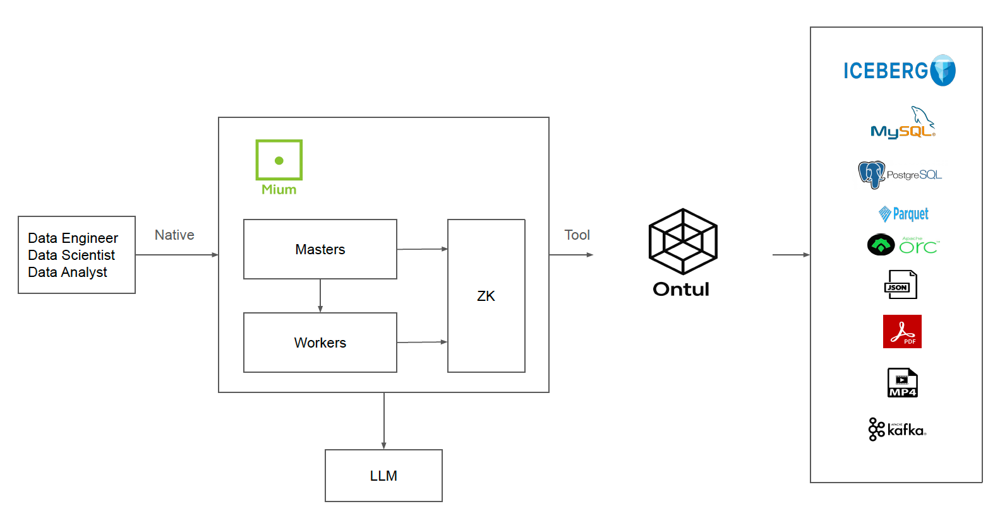

Architecture
Mium is an AI Agent Platform for Ontul — a Java-native, on-prem-first multi-agent platform that enables users to interact with data stored in Ontul through natural language. Users chat with LLMs that translate questions into SQL queries against Ontul, providing an intuitive interface for data analysis and exploration without requiring SQL expertise.
- Ontul-Native Analytics: Mium is purpose-built as the AI agent layer for Ontul. Users ask questions in natural language, and Mium's agent orchestrates SQL queries against Ontul to deliver analytical insights — aggregations, trend analysis, filtering, joins, and more.
- Multi-Agent Orchestration: Planner/executor/specialist agent patterns with a pluggable LLM backend. The agent understands Ontul's schema and SQL dialect, automatically generating optimized queries for the user's analytical intent.
- Sovereign AI: All state — IAM, credentials, chat history, encryption keys — lives in embedded RocksDB stores on your infrastructure. No external database, no cloud dependency.
Mium Architecture

Mium consists of two main deployable components: Master and Worker.
Master
The Master is the central coordination node for the entire platform — handling user sessions, administrative operations, and cluster state management.
- Admin HTTP Server: Netty-based HTTP server serving the React Admin UI and REST API endpoints under
/admin/api/*. JWT authentication (HMAC-SHA256) on all routes except/healthand/admin/auth/login. HA routing: write requests on followers are transparently proxied to the leader. - IAM (AuthManager): RocksDB-backed singleton IAM store managing users, groups, policies, companies, and organizations. AWS-style JSON policy evaluation with deny-by-default semantics.
- ConnectionStore: Per-user encrypted credential vault for tool and LLM connections. Credentials are encrypted at rest via KMS envelope encryption (AES-256-GCM).
- MemoryStore: Per-user persistent chat history. Pluggable backend — RocksDB (leader-owned, replicated to followers via
MEMORY_SYNC) or NeorunBase (shared CCL-stack database, no Mium-side replication needed). - PromptStore: Per-user saved-prompt library. Same pluggable-backend pattern as MemoryStore (RocksDB or NeorunBase).
- EmbeddingStore: Vector store for embedding-based retrieval. Backends: in-memory cosine (default) and NeorunBase
VECTOR(N). - KMS (MiumKmsProvider): Built-in envelope encryption service with versioned Key Encryption Keys (KEKs). PBKDF2-SHA256 master key derivation with 200K iterations.
- AgentLoop: Multi-action dispatch over a strict-JSON protocol. Actions:
query,submit_batch,submit_streaming,job_status,job_logs,kill_job,list_jobs,list_history,generate_code. - TempFileStore: Pluggable storage SPI for encrypted server-side export ciphertext. Backends: local filesystem and generic S3 (AWS SDK v2 — ShannonStore, MinIO, AWS S3).
- Admin Endpoints: Auth (login/refresh/password change/whoami), IAM CRUD, connection management, KMS key management, chat session management, server-side export, temp-file settings, monitoring (node topology, metrics aggregation, log tailing).
Worker
The Worker is the execution node that handles LLM calls and tool execution.
- Tool Execution: Receives
EXECUTE_TOOLopcodes from the Master and runs Ontul SQL queries using per-user credentials from the ConnectionStore. - LLM Execution: Receives
EXECUTE_AGENTopcodes and drives LLM inference via the pluggable LLM backend. Uses strict JSON replies (no vendor-specific tool APIs) for portability across providers. - Metrics Reporting: Reports CPU, heap, and thread count metrics to the Master via the NIO protocol for the Admin UI dashboard.
- Log Tailing: Streams real-time logs to the Admin UI for observability.
- Service Registration: Registers as an ephemeral ZooKeeper node — automatic detection of joins and failures.
Communication Architecture
Mium uses a custom NIO-based binary protocol for all internal communication between nodes. The wire format carries a length prefix, a correlation id, a 2-byte opcode, and a flags byte before the payload. Opcodes cover cluster control, state synchronization between the leader and followers, agent/tool execution dispatch, and observability. The control plane is pure java.nio (Selector-based) — no Netty in this layer.
Cluster Coordination
Mium uses Apache ZooKeeper (via Curator) for:
- Service Discovery: Masters and Workers register as ephemeral nodes under
/mium/masters/<nodeId>and/mium/workers/<nodeId>, enabling automatic detection of node joins and failures. - Leader Election: Curator LeaderLatch elects a primary Master that owns all write operations to the state stores. On leader failure, a new leader is automatically elected and reloads persisted state from RocksDB.
- State Replication: The leader Master replicates state to follower Masters via NIO sync messages (IAM_SYNC, KMS_SYNC, CONNECTION_SYNC, MEMORY_SYNC). Followers self-heal by periodically pulling snapshots from the leader.
- Write-Only-On-Leader: All mutating operations are handled by the leader. Follower Masters transparently proxy write requests to the leader via the
LeaderRouter.
LLM Backend Abstraction
Mium decouples from any single LLM vendor through a pluggable LlmBackend interface:
- LlmBackendFactory: Builds backends from stored connections, so each user can connect their own LLM provider.
- Strict JSON Protocol: All LLM interactions use structured JSON replies — no vendor-specific tool APIs. This ensures portability across providers.
- Request/Reply Types:
LlmRequest,LlmReply,LlmMessage— a provider-agnostic wire format. - Shipped backends:
AnthropicLlmBackend(Anthropic Claude) andOllamaLlmBackend(local / self-hosted Ollama). Embedding backends:OllamaEmbeddingBackend.
Ontul Tool Integration
Mium's primary tool is Ontul SQL — enabling LLM-driven data analysis against Ontul:
- Tool SPI: The
Toolinterface defines how Ontul is exposed to the LLM agent. The Ontul tool provides asqlReference()that the agent loop injects into the LLM system prompt, enabling the LLM to understand Ontul's schema and SQL dialect. - Natural Language to SQL: Users ask analytical questions in natural language. The agent translates these into optimized SQL queries against Ontul — aggregations, joins, filtering, grouping, trend analysis, and more.
- Per-User Credentials: The Ontul tool uses credentials from the user's ConnectionStore entry. Mium does NOT federate IAM with Ontul — there is no principal pass-through complexity. Ontul's own access control decides what data the user can access.
Data Stores
| Store | Default Backend | Config | Purpose |
|---|---|---|---|
| IAM Store | RocksDB | mium.iam.rocksdb.path |
Users, groups, policies, companies, organizations |
| KMS Store | RocksDB | mium.kms.rocksdb.path |
Master key bundle with versioned data encryption keys |
| Connection Store | RocksDB | mium.connection.rocksdb.path |
Per-user tool/LLM credentials (KMS-encrypted at rest) |
| Memory Store | RocksDB | mium.memory.backend = rocksdb | neorunbase |
Per-user chat sessions and messages |
| Prompt Store | RocksDB | mium.prompt.backend = rocksdb | neorunbase |
Per-user saved prompt library |
| Embedding Store | In-memory | mium.embedding.store = inmemory | neorunbase |
Vector store for embedding-based retrieval |
| Temp File Store | Local FS | mium.tempfile.backend = local | s3 |
Encrypted ciphertext of server-rendered exports |
IAM / KMS / Connection always live on RocksDB (they bootstrap the cluster itself). Memory / Prompt / Embedding can optionally be delegated to NeorunBase, the shared CCL-stack database, when Mium is deployed alongside the rest of the CCL stack. The Temp File Store can point at any S3-compatible object store (ShannonStore by default) so rendered exports don't pin the master node.
Client Interfaces
| Port | Protocol | Purpose |
|---|---|---|
| 8090 | HTTP (Netty) | Admin UI, REST API, chat endpoints, monitoring |
| Internal | Custom NIO | Internal cluster communication (Master-Master, Master-Worker) |
Key Design Principles
- Ontul-First — Purpose-built as the AI agent platform for Ontul. Natural language analytics on Ontul data is the core use case.
- Sovereign AI — All state lives on your infrastructure in embedded RocksDB. No external database, no cloud dependency, no data leaving your network.
- LLM-agnostic — Pluggable backend interface with strict JSON protocol. Switch LLM providers without changing application code.
- Java-native — Pure Java implementation with no JNI, no native dependencies. Custom NIO for control plane, Netty for HTTP. Simple deployment.
- Minimal external dependencies — ZooKeeper for coordination, RocksDB for state. No etcd, no Postgres, no Redis.
- HA by default — Multi-Master leader election with automatic state replication. Write-only-on-leader with transparent proxying.